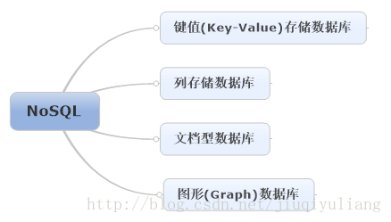

NOSQL
概念
NoSQL（NoSQL=Not Only SQL），意即“不仅仅是SQL”。
发展
NoSQL快速发展
关键原因是：传统关系型数据库遇到了性能瓶颈
高并发读写、对海量数据的高效率存储 和访问以及对数据库的高可扩展性和高可用性成了关系型数据库难以逾越的鸿沟，关系型数据库应对这三大问题显得力不从心，暴露了很多难以克服的问题，例如：
1、High performance - 对数据库高并发读写的需求
web2.0网站要根据用户个性化信息来实时生成动态页面和提供动态信息，所以基本上无法使用动态页面静态化技术，因此数据库并发负载非常高，往往要达到每秒上万次读写请求。关系数据库应付上万次SQL查询还勉强顶得住，但是应付上万次SQL写数据请求，硬盘IO就已经无法承受了。其实对于普通的BBS网站，往往也存在对高并发写请求的需求，例如像JavaEye网站的实时统计在线用户状态，记录热门帖子的点击次数，投票计数等，因此这是一个相当普遍的需求。
2、Huge Storage - 对海量数据的高效率存储和访问的需求
类似Facebook，twitter，Friendfeed这样的SNS网站，每天用户产生海量的用户动态，以Friendfeed为例，一个月就达到了2.5亿条用户动态，对于关系数据库来说，在一张2.5亿条记录的表里面进行SQL查询，效率是极其低下乃至不可忍受的。再例如大型web网站的用户登录系统，例如腾讯，盛大，动辄数以亿计的帐号，关系数据库也很难应付。
3、High Scalability && High Availability- 对数据库的高可扩展性和高可用性的需求
在基于web的架构当中，数据库是最难进行横向扩展的，当一个应用系统的用户量和访问量与日俱增的时候，你的数据库却没有办法像web server和app server那样简单的通过添加更多的硬件和服务节点来扩展性能和负载能力。对于很多需要提供24小时不间断服务的网站来说，对数据库系统进行升级和扩展是非常痛苦的事情，往往需要停机维护和数据迁移，为什么数据库不能通过不断的添加服务器节点来实现扩展呢？
在上面提到的“三高”需求面前，关系数据库遇到了难以克服的障碍，而对于web2.0网站来说，关系数据库的很多主要特性却往往无用武之地，例如：
①.数据库事务一致性需求
很多web实时系统并不要求严格的数据事务，对读一致性的要求很低，有些场合对写一致性要求也不高。
②.数据库的写实时性和读实时性需求
很多web实时系统并不要求严格的数据库事务，对读一致性的要求很低，有些场合对写一致性要求也不高。因此数据库事务管理成了数据库高负载下一个沉重的负担。
③.对复杂的SQL查询，特别是多表关联查询的需求
任何大数据量的web系统，都非常忌讳多个大表的关联查询，以及复杂的数据分析类型的复杂SQL报表查询，特别是SNS类型的网站，从需求以及产品设计角度，就避免了这种情况的产生。往往更多的只是单表的主键查询，以及单表的简单条件分页查询，SQL的功能被极大的弱化了。
因此，关系数据库在这些越来越多的应用场景下显得不那么合适了，为了解决这类问题的非关系数据库应运而生，现在这两年，各种各样非关系数据库，特别是键值数据库(Key-Value Store DB)风起云涌，多得让人眼花缭乱。下面，我们具体看一下它的分类：
